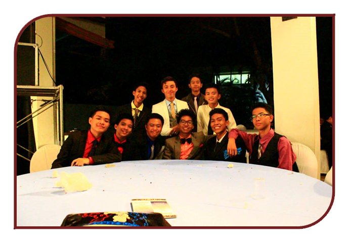

Aspirations in Life
It's quite ironic because at first i didn't like to be a doctor someday because i don't want to conform with the norm. Where in a class, a teacher would ask "What do you want to be when you grow up?" and then there's the rich kid on the block saying "i'd like to be a doctor because I want to help people and stuffs". Ya'know it's like a cyclical relationship in the society. So much of that, I would be frank with you; I would like to be a Neurologist someday. You know, they’re cool and I think they’re the best of the best specialization of a doctor. As I am taking up my Psychology course, I’ve come to realize my disposition in life. That is to help people treat their neurological diseases because the mind is the greatest thing that God ever give us aside from our life. Our mind can make “impossible” possible through our commitment and work ethics. It is amazing how our mind can hold Trillions of information surging in our brain and in just a blink; we can construct a mindboggling innovation. I prefer to treat every psychological disorder I encounter in life so that I can be a big help to the community. It delights my heart and soul when a person says thank you even a little bit of assistance that you offer to him/her.
Next is to have a family and children that would support and motivate my life every day when work gives you so much stress and headache. As of now, I don’t have any intimate relationship (LOL) because I am holding to my thinking that, “You have to build first a kingdom until the best lady come, for she’ll be the Queen in the kingdom you built”. Just like what Cong said in his vlog CONGTV. That’s why I am focused on my studies and giving my 100 percent in every work i face. But before having my family, I have to help my parents in their work and to lighten their load because of the big tuition fee in La Salle, LOL. I have to make sure that those cents they work hard for would pay off when I graduated in college. I have to give them back all the love they have offered me and the blood sweat they’ve thrived just thinking of my future.
Lastly i’d like to have a company where there is no discrepancy, discrimination and fear where there is only love and peace for every people. I want to reconcile with my high school barkada, because just like what we planned, we will have a business that will be sucessfull someday. I’d like to dream of that because it makes me teary-eyed when people help each other for them to move forward in life. As a Christian follower of the Lord, my goals is to bring back the lost humanity in His land and offer the best offering and praise anytime and anywhere. As Matthew 6:33 says, “Seek first His kingdom and righteousness of our Lord, and all these things will be given to you as well”.
|